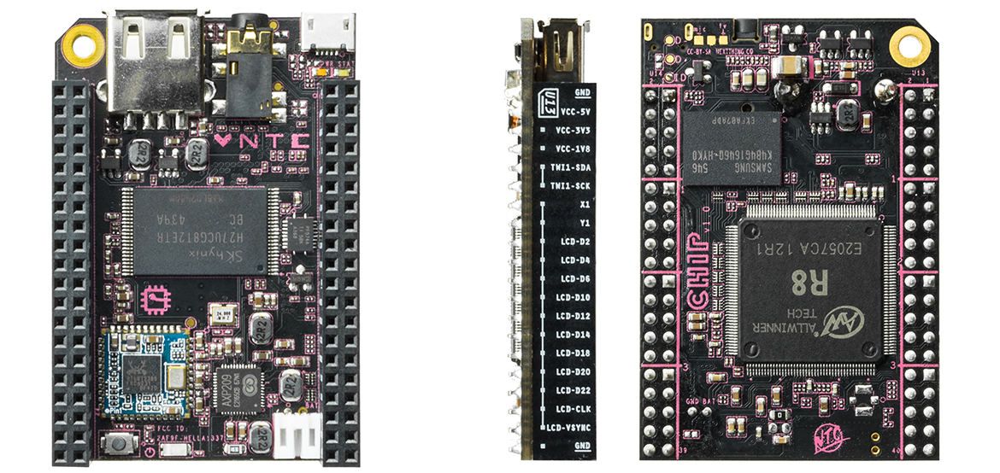

کامپیوتر نه دلاری
شنبه ۲۷ آذر ۱۳۹۵
۵ دقیقه مطالعه
بیش از هجده سال پیش برای اولین بار صاحب یک کامپیوتر شدم. سیصد مگاهرتز سیپییو، شانزده مگابایت رم، چهار گیگ هارد و بدون شبکه و مودم با مانیتور سیآرتی و یک کیس بزرگ با لوازم جانبی. به تازگی کامپیوتری خریدم به قیمت نه دلار که کوچکتر از کف دست یک مرد بزرگسال است. در این نوشته آنها را با هم مقایسه میکنم.

همیشه دوست داشتم یک سرور خانگی راهاندازی کنم. اما در گذشته گزینه ارزان قیمتی برای اینکارها وجود نداشت. اصلا چیز مناسبی برای مصرف کنندهها در بازار نبود. باید یک کامپیوتر حجیم را جایی روشن میگذاشتی که بشود به اصطلاح سرور. تازه باید تجهیزات شبکه گرانقیمت هم تهیه میکردی. البته همینکار را هم کردم. آن کامپیوتری که اول نام بردم برای مدتها در دوران دانشجویی نقش سرور اشتراک اینترنت، فایل سرور، چت سرور و غیره را برعهده اشت. البته یک روتر قدرتمند WRT54G و یک کارت شبکه کابلی بهش اضافه کرده بودم. با این وجود مصرف برق و حجم زیاد و سر و صدا و آسیبپذیری در برابر قطع برق و گرد و خاک همواره وجود داشت. به طور کلی همه قطعات خیلی آسیبپذیر بودند. برخی سیپییوها در صورت داغی و گرد گرفتگی فن یا از کار میافتادند یا میسوختند، هاددیسکها زودتر خراب میشدند، پاور دستگاه بر اثر گردگرفتگی و نوسانات برق براحتی خراب میشد و قطعات مکانیکی هم که اول صف خرابی بودند.
بنابراین آن کامپیوترهای حجیم و آسیبپذیر خانگی گزینهی مناسبی برای تبدیل به سروری نبودند که باید همواره روشن باشد. پس جستجوی من همیشه برای پیدا کردن کامپیوترهای کوچک ادامه داشت. در طی این مدت هم تکنولوژی پیشرفت میکرد و روز به روز کامپیوترها سریعتر و ارزانتر و بهتر میشدند. تا اینکه طی سالهای گذشته با بوجود آمدن پدیده Crowd Funding شاهد ظهور گروههای کوچکی شدیم که با رقبای بزرگ تولید کننده کامپیوتر به رقابت پرداختند. البته بیشتر از رقابت کردن بهتر است بگوییم که خلائی را پر کردند که شرکتهای سنتی و بزرگ تولید کننده کامپیوتر علاقهای به آن نداشتند. یعنی برای آنها انگیزه مالی کافی وجود نداشت که بیایند و برای دل ما کامپیوترهای کوچک تولید کنند! :)
در این میان «اینترنت چیزها» یا همان Internet of Things - IoT هم متولد شد. یعنی کامپیوترها دیگر ناپیدا شدند و درون هر قطعهای نفوذ کردند. درون تلویزیونها، دوربینهای مداربسته، سنسورها، میکروفنها، کارتهای اعتباری، کلیدها، لامپها و مانند اینها. به این لیست هرچه تصور میکنید هم اضافه کنید باز تمام نمیشود. در گذشته نیاز بود برای هر یک از اینها یک کامپیوتر یا پردازنده خاص تولید بشود. اما امروزه کامپیوترهای همه منظوره و Sysstem on Chip - SoCها یا همان سیستم روی تراشه بقدری کوچک شدهاند که مقرون به صرفهتر که از همینها استفاده کرد. SoCها بجای یک سیپییو در حقیقت یک کامپیوتر با معماری فون نویمان را روی تراشه ساختند، با سایر تراشههایی که سابقا جداگانه نصب میشدند یا روی مادربورد قرار داشتند، مثل تراشه بلوتوث و وایفای و پشتیبانی از دیسکهای بزرگ و درگاههای سریع مثل USB.
در حوزه مصرف انرژی این قطعات هم انقلابی به پا شد. بلوتوث پدید آمد و روز به روز کم مصرفتر و بهتر شد. آخرین نسخه آن که به بلوتوث ۴.۱ مشهور است میتواند همواره با چندین قطعه در تماس باشد بدون اینکه انرژی زیادی مصرف کند. در ضمن محققان پا را از این هم فراتر گذاشتند و قطعاتی طراحی کردند که انرژی مورد نیازش را از القای الکترومغناطیسی میگیرد و هروقت انرژی کافی ذخیره کرده باشد مدارش را اجرا میکند. (این مطلب را با مثالهایی که پیدا کنم به روز خواهم کرد).
معماری سیپییوها هم متحول شد. با ورود ARM صنعت تولید تراشه به سوی کامپیوترهای جیبی نشانه رفت. جایی که مدتها بود اینتل از آن غفلت کرده بود. انقلاب واقعی اینجا اتفاق افتاد، در اسمارتفونها. اسمارتفونها سریعترین رشد تکنولوژی را در تاریخ فناوری پشت سر گذاشتهاند. به سرعت تمام همه چیز به سمت کوچکتر شدن و کم مصرفتر شدن حرکت کرد. نتیجه آن هم امروز در جیب هر کدام از ما پیدا میشود. یک کامپیوتر قدرتمند، با مصرف انرژی کم، بدون هیچگونه صدا و قطعه مکانیکی و مجهز به انواع سنسورهای محیطی، چیپیاس، بلوتوث و وایفای. وارد مقوله دوربین هم اصلا نمیشوم. باورکردنی نیست.

اگر نام قانون مور به گوشتان خورده باشد، طبق آن هر دو سال تعداد ترانزیستورهای موجود روی واحد سطح تراشهها دو برابر میشود. پیتر هینتجنز هم که قبلا راجع به او نوشتهام قانون مشابهی دارد که در کتابش بنام ُCulture and Empire شرح داده است. اون این قانون را Cost Gravity مینامد، یعنی «گرانش هزینهها». به این معنی که هر دو سال یکبار قیمت تمامشدهی محصولات الکترونیکی نصف میشود. مثلا دو سال دیگر میشود هاردیسکی دو برابر حجیمتر و بهتر از نسخه فعلی کامپیوترمان را به قیمت فعلی خرید. همینطور برای رم و سایر قطعات. اگر گرانش هزینهها نبود، کامپیوتری سلرون قدیمی من باید همراه با نرخ تورم هر روز گرانتر میشد و امروزه میلیونها تومان قیمت داشت. ولی برعکس، من بتازگی کامپیوتر کوچکی خریدهام بنام «چیپ» با مشخصات زیر:
- سیپییو ۱ Ghz
- ۵۱۲ مگابایت رم
- بلوتوث ۴.۰
- ۴ گیگابایت دیسک پرسرعت
- وایفای ب/جیم/نون
- یواسبی ۲.۰
- خروجی ویدیو TRRS و HDMI
- پینهای ورودی/خروجی جهت اتصال سایر بوردها
امکانات بورد از این هم بیشتر است که در مستندات آنها قابل دسترسی است. روی فلش مموری هم یک نسخه سفارشی شده دبیان از پیش نصب شده است.
همه اینها فقط ۹ دلار قیمت دارد. یعنی ۳۰ هزار تومان.

برق این کامپیوتر از یک کابل مینیمیکرویواسبی تامین میشود که امروزه همه جا یافت میشود. من چیپ را بدون مانیتور راه اندازی کردم. به کمک GNU Screen. طرز کار در مستندات چیپ شرح داده شده. به طور خلاصه چیپ با اتصال به یک پورت یواسبی کامپیوتر روشن میشود و به عنوان یک قطعهی سریال خودش را به کرنل معرفی میکند. اسکرین هم میتواند به آن وصل شود و به شما یک ترمینال بدهد که بقیهی کارها مثل تنظیم اولیهی وایفای را آنجا انجام میدهید.
من موقع خرید دو تا چیپ سفارش دادم. چهار تای دیگر هم دارم سفارش میدهم. سیزده چهارده سال پیش که همراه دوستم قدیمیام علی صادقی یک مودم اکسترنال را شریکی به قیمت ۵۴ هزار تومان خریدیم (چون هیچ کدام پول کاملش را نداشتیم) فکر نمیکردم که زمانی بجای یک کامپیوتر چند تا باهم سفارش بدهم.
شاید اولین گروهی که کامپیوتری اینچنینی به تعداد انبوه تولید و روانه بازار کرد رازبریپای بود. آنها نه تنها یک کامپیوتر ۲۵ دلاری ساختند بلکه یک کامیونیتی حول آن ایجاد کردند. پروژههای تکمیلی زیادی هم حول رازبریپای ایجاد شد. شاید مهمترین گروه مخاطب پروژههای اینچنینی کودکان و نوجوانان هستند که میتوانند با بکارگیری این کامپیوترهای ارزان و قابل توسعه (توسط سنسورها و دوربین) کارهای خلاقانه انجام بدهند.
اما این تازه شروع کار است. برای دیدن لیستی از کامپیوترهای کوچک مشابه این لیست را ببینید. برای دیدن لیستی از سختافزارهایی که توسط مردم پشتیبانی مالی میشوند وبسایت کراود ساپلای را ببینید.
تکنولوژی به طور عام و کامپیوتر به طور خاص در دسترستر از همیشه است. برای من مهمترین پیامد این تغییر متحول شدن جامعه است. ارزان شدن کامپیوترهای چند منظوره گردش اطلاعات و ایجاد پروژههای خلاقانه را بیش از پیش تسهیل خواهد کرد. بویژه جوامعی که از نظر دسترسی به زیرساختهای آموزشی لازم فقیر هستند از این تغییر بیشتر سود را خواهند برد. چون حالا برای خلاقیت و پیاده کردن ایدههایشان ابزاری ارزان قیمت در اختیار دارند. هر کودک یک خانواده فقیر هم احتمالا میتواند یک کامپیوتر سی هزار تومانی بخرد و برنامه بنویسد و پروژهای بسازد.
من با اشتیاق این موضوع را دنبال میکنم.
سختافزار چیپ بورد آرم سورس
سپاس از مطلب زیباتون فقط مینی یو اس بی را اصلاح کنید .آن میکرو یو اس بی است.
ممنون، اصلاح کردم.